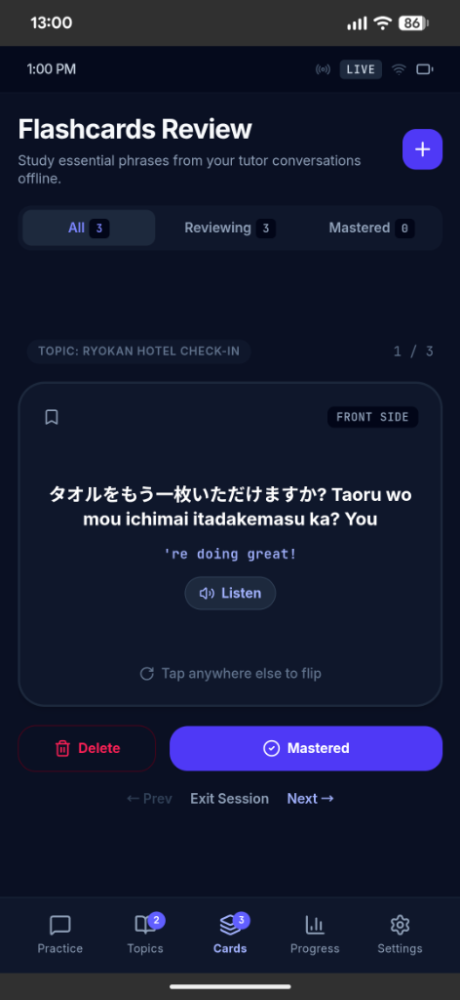
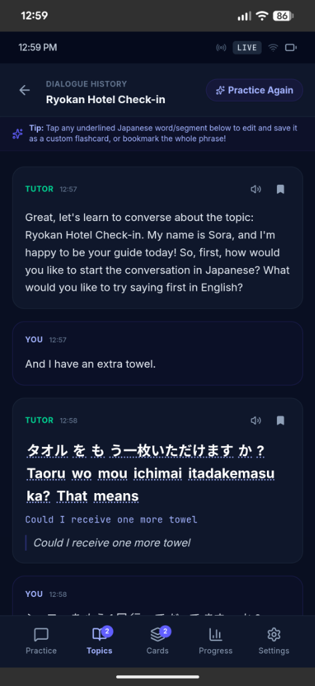
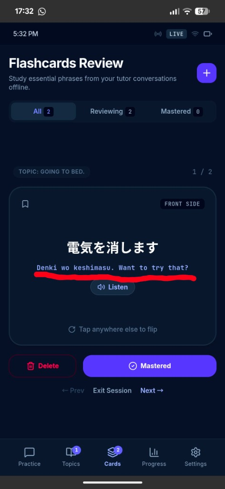
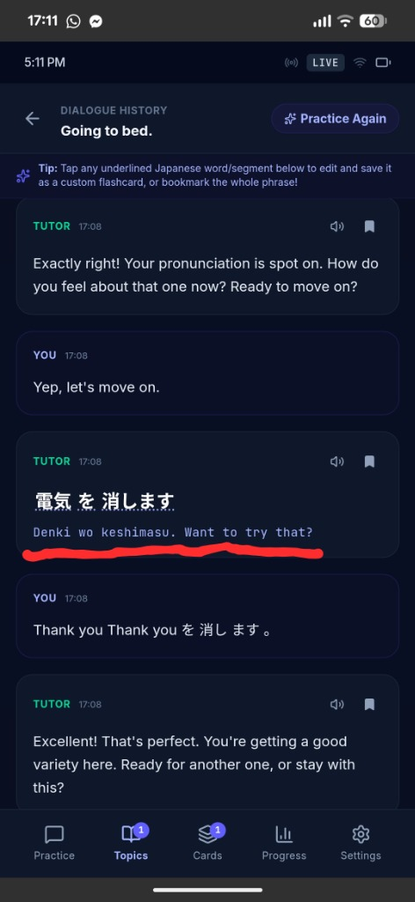
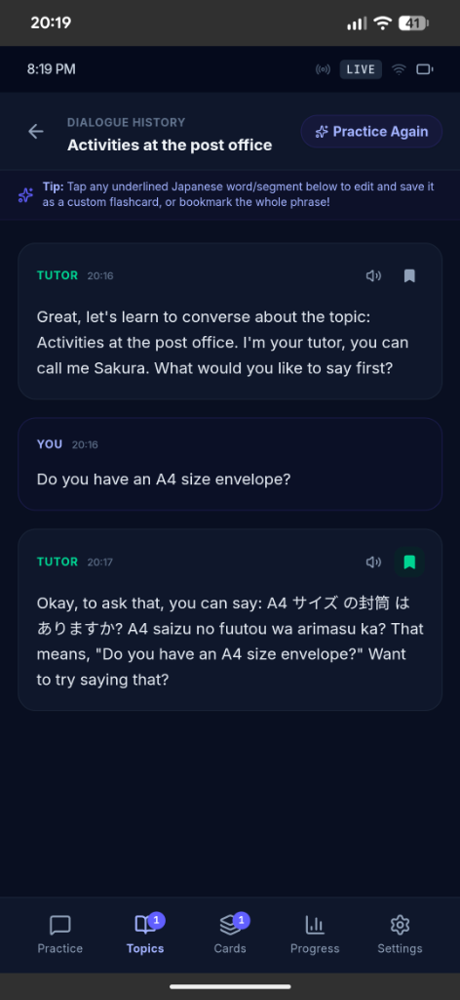

Nihongo Voice Tutor connects directly to Google AI Studio's Gemini Multimodal Live Audio API to provide high-speed, interactive Japanese voice lessons.
Microphone permission granted on your Android device, iOS device, or desktop web browser.
First Time Launch
Open the application on your mobile device or web browser.
Tap the Settings icon (⚙️) in the top navigation bar.
Paste your Gemini API Key (starts with AIzaSy...) into the API key field.
Select your preferred Tutor Voice (e.g. Aoede or Puck).
Tap Save Settings.
2. 🎙️ Live 1-on-1 Voice Lessons
The core feature of the app is spoken conversation with your AI tutor, who behaves like an encouraging native Japanese teacher.

Live Spoken Lesson Interface
How to Conduct a Lesson
Select a topic from the Topics screen or tap Start Voice Session on the dashboard.
Tap the large blue Microphone Button to start the session.
Speak naturally in English or Japanese! For example: "How do I ask where the train station is in Japanese?"
The tutor will speak back out loud in Japanese, teach you the phrase, and prompt you to repeat it.
💡 Pedagogy Rule: The tutor will pause after presenting a phrase so you can practice repeating it out loud before moving on.
3. 🗂️ Topics & Custom Scenarios
Practice real-world Japanese conversations across structured scenarios or invent your own custom prompts.

Preset & Custom Scenario Selection
Presets Available
Gas Station: Fill up your car ("Regular, full tank please!").
Ordering Coffee: Customizing milk and sizes at a cafe.
Ryokan Check-in: Hotel reservations and dinner times.
Asking Directions: Navigating Shibuya station.
4. 🎴 SRS Flashcards & Word Capture
Never forget vocabulary from your lessons! Every turn spoken by the tutor is automatically transcribed into clean Japanese, Romaji, and English.

Flashcards Deck Practice

Interactive Card Side & Pronunciation
Saving Words & Cards
Segmented Word Capture: Tap any underlined Japanese word in the transcript to instantly create a flashcard for that specific word.
Full Sentence Capture: Tap the Bookmark icon (🔖) next to any tutor response to save the phrase to your deck.
24kHz HD Audio Playback: Tap the Listen button on any flashcard to hear high-definition native pronunciation powered by Microsoft Edge Neural Speech (ja-JP-NanamiNeural).
5. 🔄 Syncing Across Devices
Keep your flashcards and lesson history in sync between your Android phone, iPad, and laptop.
How to Sync Data
Go to Settings ➔ Data Synchronization.
Tap Get Sync PIN to generate your unique 6-digit backup PIN.
Tap Sync Up to backup your flashcards to the encrypted Cloud Run server.
On your second device, enter your 6-digit PIN in Settings and tap Sync Down to restore your study data.
6. 🛠️ Settings & Diagnostics
If you ever encounter an issue or want to view diagnostic information:

Client & Server Diagnostic Viewer
Tap the Terminal Icon (💻) in the navigation header to view live client and server logs.
Tap Email Dev to automatically compile and send diagnostic logs to support.